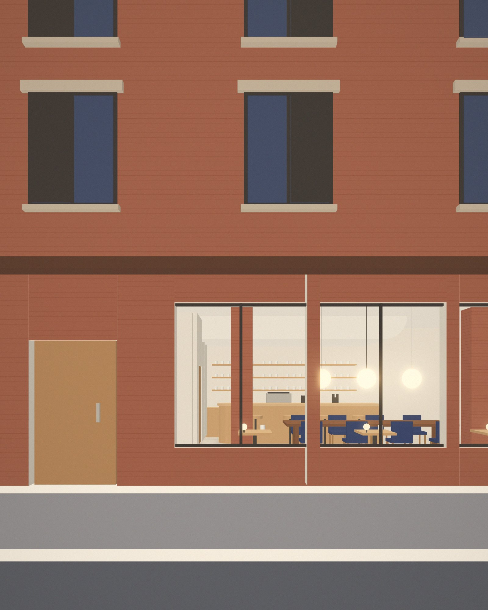

찾아오시는 길
저녁 여섯 시부터 새벽 두 시까지 문을 엽니다.

주소와 연락처
- 주소
- 서울시 용산구 해방촌 월하길 15, 1층
- 전화
- 02-000-0000
영업시간
| 월요일 | 휴무 |
|---|---|
| 화요일 | 18:00 – 02:00 |
| 수요일 | 18:00 – 02:00 |
| 목요일 | 18:00 – 02:00 |
| 금요일 | 18:00 – 02:00 |
| 토요일 | 18:00 – 02:00 |
| 일요일 | 18:00 – 02:00 |
자정을 넘긴 새벽 두 시까지는 전날 밤 영업입니다. 일요일 밤에 오시면 월요일 새벽 두 시까지 머무실 수 있습니다.
약도
오시는 방법
- 지하철
- 6호선 녹사평역에서 신흥로 언덕길을 따라 걸어서 15분
- 버스
- 해방촌 오거리에서 내려 월하길을 따라 걸어서 3분
- 주차
- 주차 공간이 없어 대중교통을 권합니다